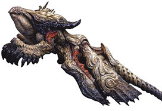
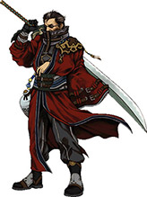

Final Fantasy X
Final Fantasy is an ongoing video game franchise developed and owned by Square Enix, formally known as Square Soft, and has been ongoing since 1987. The tenth installment of the franchise is Final Fantasy X, 2001, which features a wide range of characters and is set in the world of Spira. There is an HD remake set to release in March, 2014 for the PlayStation3 and PlayStation Vita. The remake will include both FFX and the sequel game FFX-2. The image featured is the HD remake's limited edition game case cover that features the main characters, Tidus and Yuna. Those who preorder the game with receive the limited edition game case as well as the concept artbook.
Final Fantasy X Characters
- Tidus: the main character. He is also a star blitzball player. He accompanies Yuna as one of her guardians after meeting Wakka.
- Yuna: a high summoner who goes on a pilgrimage all over Spira in order to kill Sin and obtain the Final Summon. Summoners in the past have been accompanied by guardians that protect and follow her on her pilgrimage.
- Sin: people believe that Sin was born because of their ancestors fiddled with machines known as machina and now they are being punished. Sin can only be destroyed by a summoner, like Yuna, who calls for the Final Summon.

- Rikku: of Al-Bhed decent, she is the first character that Tidus meets in the game and later on also becomes one of Yuna's guardians. Rikku also appears as a main character in FFX-2.
- Wakka: a Blitzball coach and also one of Yuna's guardians.
- Lulu: she is a black magic and one of Yuna's guardians.
- Auron: he was one of Yuna's fathers guardians when he went on his pilrimage, and now is one of Yuna's.

- Kimahri: a Ronso who has protected Yuna ever since she was a child.

Final Fantasy X Fun Facts
- FFX's Yuna is the first and only character with heterochromia having one blue eye and one green eye
- Blitzball, the underwater national sport of Spira, was introduced and since has become very popular with fans wanting a blitzball game
- Tara Strong is the voice of Rikku. Tara Strong is an accomplished voice actress who has been the voice os Timmy Turner in Fairly Odd Parents, Bubbles from the Powerpuff girls, Harley Quinn in Batman: Arkham City, upon many others.
- The script for FFX was reportedly ten times longer then that of the average Hollywood movie.
- FFX was the first Final Fantasy game released for the PlayStation2 console.
Source - Ten things you didn't know about FFX
Source - Little Known Facts About Final Fantasy X